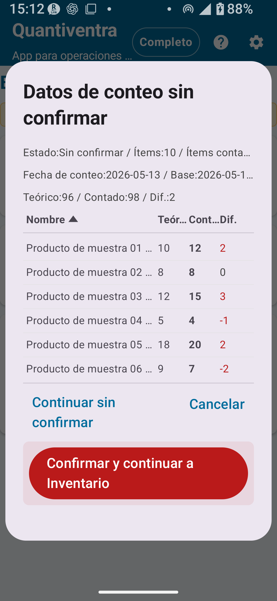

④ Inventario físico — versión completa (Desbloqueo completo)
Funciones de la versión completa, ubicaciones detalladas, confirmación de resultados, aplicación a existencias y flujo práctico
Temas tratados: Funciones de la versión completa / Diferencias con la versión estándar / Ubicaciones detalladas / CSV ampliado / Historial / Confirmar resultados del inventario físico / Aplicar resultados a existencias / Notas importantes / Flujo práctico
CAPÍTULO 1
Descripción de la versión completa
La versión completa de inventario físico elimina los límites de registros y activa los ajustes completos compartidos, como reglas de código, reglas de ubicación, ajustes de cámara y CSV ampliado. También permite trabajar con grandes volúmenes de productos y realizar inventarios por ubicaciones detalladas.
✅ Funciones añadidas o habilitadas en la versión completa
Eliminación de los límites de registros de catálogo, historial de inventario y exportación
Configuración de reglas de código detalladas
Configuración de reglas de ubicación detalladas
Configuración detallada de cámara
Exportación CSV ampliada
Edición detallada
Bloqueo de rotación de pantalla (heredado del Desbloqueo estándar)

Fig. 1-1 Pantalla de confirmación de inventario (versión completa)
CAPÍTULO 2
Diferencias con la versión estándar
Funcionalidad / Ajuste
Versión estándar
Versión completa
Registros de catálogo
Máx. 300
Ilimitado
Registros de historial de inventario
Máx. 1.000
Ilimitado
Registros exportados
Máx. 300
Ilimitado
Configuración de reglas de código detalladas
✗
○
Configuración de reglas de ubicación detalladas
✗
○
Configuración detallada de cámara
✗
○
Exportación CSV ampliada
✗
○
Uso de ubicaciones detalladas
✗ (modo Detallado se puede configurar pero con funcionalidad limitada)
○
CAPÍTULO 3
Ubicaciones detalladas
Con la versión completa, todas las ubicaciones registradas en el Catálogo de ubicaciones están disponibles para el inventario físico. Puedes configurar números de estante, pisos, áreas y otras ubicaciones detalladas además de bodega y tienda.
Cómo configurar ubicaciones detalladas
Ve a Ajustes → Ajustes de inventario y selecciona el modo Detallado.
Ve a Gestión de catálogos → Catálogo de ubicaciones y registra las ubicaciones necesarias.
En la pantalla de inventario, toca el campo de ubicación para ver todas las ubicaciones registradas.
⚠ AtenciónAunque el Desbloqueo completo esté activo, si el modo sigue siendo Simple A/B/C, solo se mostrarán las ubicaciones simples. Cambia al modo Detallado para usar todas las ubicaciones registradas.
CAPÍTULO 4
Importación/Exportación CSV ampliada
La versión completa permite usar funciones ampliadas de importación y exportación CSV para el inventario físico.
Especificaciones básicas de importación CSV
Tipo de CSV
Propósito
Columnas principales
Notas
CSV de inventario físico (2 columnas)
Importar catálogo básico para inventario
Código de producto, nombre del producto
Sin encabezado; los datos comienzan en la primera fila
CSV de inventario físico (3 columnas)
Importar catálogo con existencias teóricas
Código de producto, nombre del producto, existencias teóricas
La cantidad real se registra durante el inventario
Exportación CSV del inventario físico
Los archivos exportados incluyen una fila de encabezado en el idioma seleccionado.
El CSV stocktake_summary no incluye columnas de fecha, hora ni ubicación.
Para exportaciones detalladas por ubicación, fecha o línea, revisa las opciones disponibles en el historial y el contenido del archivo generado.
🚨 ImportanteLas operaciones CSV pueden afectar muchos datos. Antes de importar o reemplazar información, exporta un respaldo y revisa la pantalla de confirmación.
CAPÍTULO 5
Historial de inventario físico
Con el Desbloqueo completo se elimina el límite de registros del historial de inventario físico. Puedes conservar y revisar registros de conteos anteriores durante más tiempo.
Datos que se pueden revisar
Fecha y hora de guardado
Código y nombre del producto
Cantidad real contada y ubicación
Notas y estado de confirmación
💡 ConsejoAntes de confirmar el conteo real o aplicar los resultados a existencias, revisa el historial y corrige cualquier error detectado según el flujo disponible en la app.
CAPÍTULO 6
Confirmar resultados del inventario físico
En la versión completa, puedes confirmar los resultados del inventario físico ingresado. Al confirmar, los resultados pasan a tratarse como un registro oficial de inventario físico.
Flujo desde la captura del inventario hasta la confirmación
① Ingreso de datos de inventario: Escanear código de barras → Ingresar cantidad → Guardar
↓
② Revisión del historial de inventario: Revisar los elementos guardados y corregirlos mediante las opciones disponibles en la app
↓
③ Confirmar resultados del inventario físico: Ejecutar la operación de confirmación después de revisar los datos
↓
④ Aplicar a existencias (opcional): Aplicar los resultados confirmados a la gestión de existencias
🚨 Sobre el botón ConfirmarConfirmar los resultados del inventario físico es una operación de alto impacto que puede afectar los datos de existencias. El botón Confirmar se encuentra en una zona de riesgo separada debajo de los detalles de confirmación; no es el primer botón que debes tocar. Antes de usarlo, revisa cuidadosamente las diferencias y los datos afectados.
🚨 ImportanteAntes de confirmar, revisa siempre el historial de inventario físico. Lee atentamente las instrucciones de la pantalla de confirmación antes de continuar.
CAPÍTULO 7
Aplicar resultados del inventario físico a existencias
Aplicar los resultados del inventario físico a la gestión de existencias ajusta las cantidades para que coincidan con el conteo físico confirmado. Las diferencias se registran como entradas de ajuste en el historial.
Ingresa los datos de inventario y confirma el conteo real.
Ejecuta la operación de aplicar resultados a existencias.
Revisa el contenido (detalles de ajustes) en la pantalla de confirmación.
Después de confirmar, ejecuta la aplicación.
Verifica los detalles de los ajustes en el historial de existencias.
🚨 ImportanteAplicar resultados a existencias realiza cambios significativos en las cantidades. Antes de continuar, exporta siempre un CSV de respaldo y lee atentamente la pantalla de confirmación.
💡 Después de aplicarSi necesitas revisar una aplicación ya realizada, comprueba el historial de existencias y conserva el CSV de respaldo. Las acciones disponibles deben seguir las opciones mostradas en la app.
CAPÍTULO 8
Notas importantes sobre la aplicación a existencias
🚨 Siempre haz respaldo antes de aplicarAplicar resultados a existencias puede cambiar muchos datos. Exporta previamente un CSV de respaldo (Ajustes → Exportar todos los datos).
⚠ Lee la pantalla de confirmaciónPara cualquier operación que modifique datos — confirmar resultados, aplicar resultados, eliminar o reiniciar — lee atentamente la pantalla de confirmación antes de ejecutar.
CAPÍTULO 9
Flujo de trabajo práctico — versión completa
Flujo de inventario mensual
A principios de mes, importa el CSV de inventario para actualizar el catálogo de productos.
Configura los ajustes de inventario en el modo Detallado y prepara las ubicaciones por estante y área.
Realiza el inventario: escanea los códigos de barras e ingresa las cantidades reales.
Revisa todos los elementos en el historial de inventario.
Si todo está correcto, ejecuta la confirmación del conteo físico.
Después del respaldo, ejecuta la operación Aplicar a existencias.
Revisa las entradas de ajuste de inventario en el historial de existencias e investiga cualquier diferencia.
Exporta el CSV de resultados del inventario para archivar.
📌 Puntos clave del capítulo
El Desbloqueo completo elimina todos los límites de registros y activa ubicaciones detalladas y CSV ampliado.
Para usar ubicaciones detalladas, cambia al modo Detallado en Ajustes → Ajustes de inventario.
El flujo Confirmar → Aplicar a existencias realiza cambios masivos en los datos — procede con cuidado.
Antes de aplicar a existencias, siempre exporta un CSV de respaldo.
🔍 Notas antes de usar
Después de confirmar los resultados del inventario físico, revisa el historial, la pantalla de la app y los CSV de respaldo antes de realizar cambios adicionales.
Después de aplicar resultados a existencias, confirma los ajustes en el historial de existencias y conserva el CSV de respaldo.
Para las exportaciones detalladas, revisa las opciones disponibles en la pantalla de exportación y el contenido del archivo generado.
Si necesitas corregir datos guardados, usa los flujos de edición disponibles en la app y confirma el resultado en el historial.